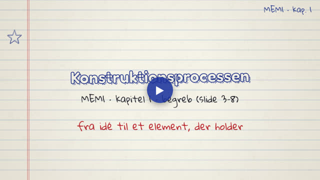
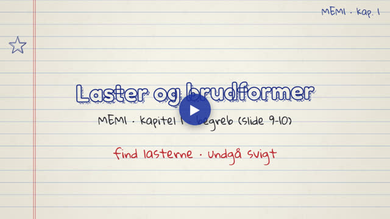
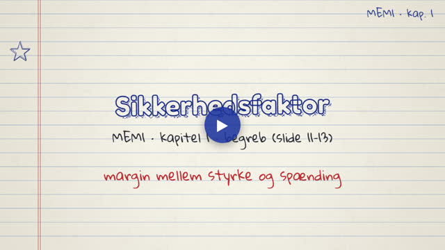
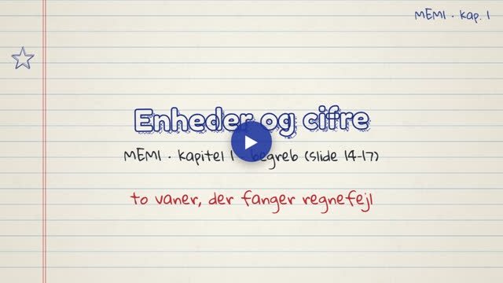

MEM1 · Introduktion. Videoerne tegnes live i din browser og fylder næsten ingenting.
Ét begreb pr. video, i slidernes rækkefølge.

Hvad konstruktion er, maskinelementer, de seks trin i processen og forskellen på analyse og design.

Lasttyper, lastens vej gennem elementet, de otte brudformer og et kriterium for hver.

Hvorfor vi har en margin, n = S_y/σ, den tilladte spænding og afvejningen mellem sikkerhed og pris.

Standarder, N og mm giver MPa, enhedskontrol og betydende cifre med eksemplet fra slide 17.
Eksempler og eksamensopgaver fra kapitlet, trin for trin.